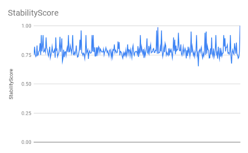
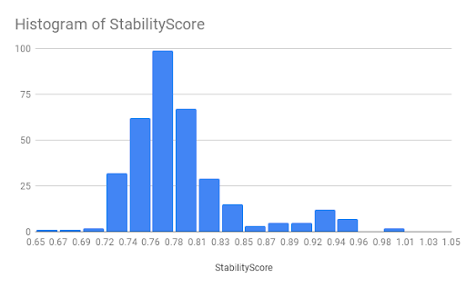
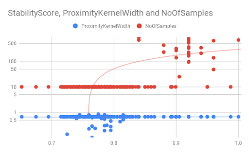

Autotuning LIME explanations with few predictions
Tuning algorithms, especially when machine learning is involved is often a tricky business. In this post we present an optimization based technique to automatically tune LIME in order to obtain more stable explanations.
LIME (aka Local Interpretable Model agnostic explanations) is one of the most commonly used algorithms for generating explanations for AI based models. Within TrustyAI we developed an optimized implementation of LIME that is well suited for the decision-service scenario (see our preprint), while retaining the goods of the original LIME approach.
In a post from last year we already introduced how to use LIME in order to obtain Saliency explanations. Such explanations are useful to detect which features are important, to the model/service being invoked, to perform a particular prediction (e.g. like a credit card approval task, as the one in the image below)
However researchers have observed that there are situations where LIME explanations are not very stable (see LIME stability indices and Developing the sensitivity of LIME papers), this means that you might obtain different weights for a given feature in different runs on the same prediction, scary! LIME trains a linear model in the local neighborhood of the prediction to be explained, however sometimes this linear model might not be very accurate because of either the samples that have been generated or because of the strictness of the function that scores the proximity of a given sample. Very interesting insights about these problems can be found on the Limitations of interpretable ML methods book (see sampling, neighborhood). All in all, most of the instability can derive from a suboptimal choice of LIME hyperparameters (the no. of samples generated, the proximity function behavior, the encoding / binning parameters, etc.).
In order to address this we have designed a way to let LIME be automatically tuned via an optimization algorithm that maximizes a stability scoring function over the set of LIME hyperparameters. We define four categories of hyperparameters to be optimized: the sampling parameters, the proximity parameters, the encoding parameters and the weighting parameters.
The sampling parameters control the no. of samples generated, the amount of perturbations performed for each sample, the proximity parameters control the strictness of the proximity scoring function, the encoding parameters control how selective the binning in sparse encoding should be, finally the weighting parameters control whether any of the optimizations we developed for stabilizing the weights (see our preprint) should be used.
Now we define the stability score function as the mean between positive and negative explanation stability for each decision taken by the model / decision-service. Such positive and negative explanation stability scores are defined as the number of times the top k important (positive/negative) features identified by a LIME explanation, in a number of runs n (e.g. 5), are actually the same.
We now just need to add some optimization sugar by leveraging OptaPlanner! We sample a small number (e.g. 5) of existing predictions to iterate over and optimize the above defined stability score function.
We take an existing model, a starting configuration (e.g. the default LIME configuration) and a few predictions (e.g. from past executions of a model) and we’re all set up to optimize our LIME stability score function.
PredictionProvider model = getModel(); List<Prediction> predictions = ...; LimeConfig initialConfig = new LimeConfig(); LimeConfigOptimizer limeConfigOptimizer = new LimeConfigOptimizer(); LimeConfig optimizedConfig = limeConfigOptimizer.optimize(initialConfig, predictions, model); LimeExplainer limeExplainer = new LimeExplainer(optimizedConfig);
The optimization process will run for a while and then we’ll obtain our desired optimized configuration, holding the best LIME hyperparameters the optimization could come up with.

We see the stability score varies a lot and finally goes up to a desired value of 1.

Another interesting aspect we can debug is the most recurring stability scores across LIME configurations.

Finally we can also inspect the impact of different hyperparameters on the stability score.
We outlined an effective solution for autotuning LIME hyperparameters to obtain more stable explanations, more insights about the technical aspects involved can be obtained by having a look at the PR.